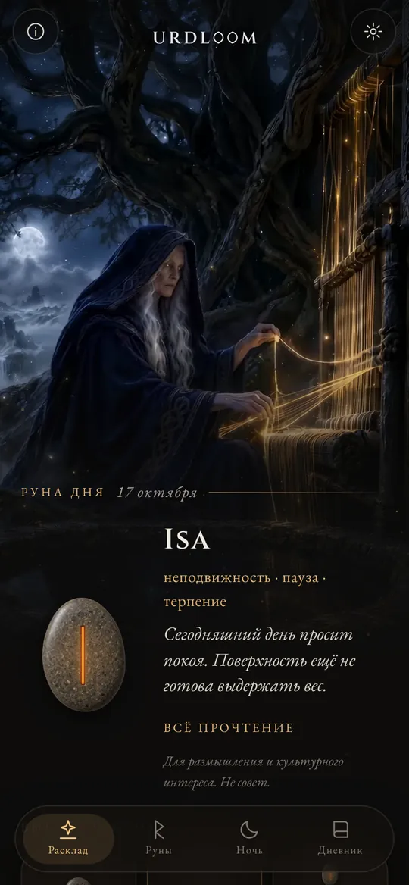
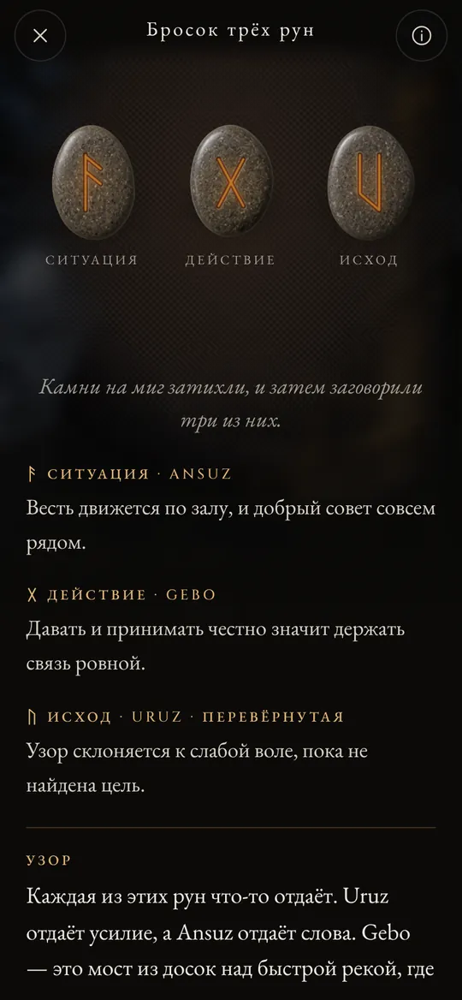
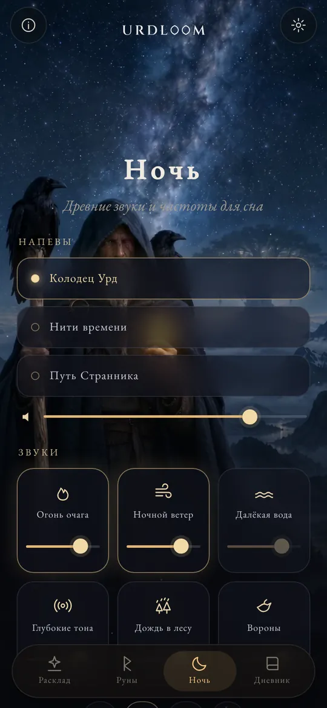
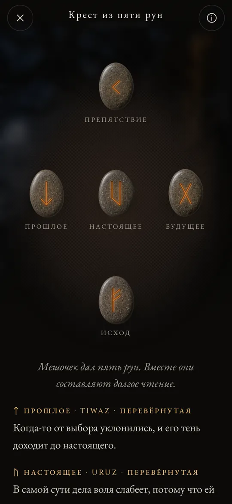

Прочтения рун из колодца судьбы.
Бросай руны Elder Futhark, читай выпавшее голосом старых поэм, и пусть звуки ночи унесут тебя в сон.
Три женщины сидят у колодца
В древнескандинавских поэмах три Норны сидят у колодца под Иггдрасилем, мировым деревом. Они поливают его корни, вырезают знаки на дереве и определяют жизнь каждого, кто рождается. Старшую зовут Урд. Её имя значит «то, что свершилось», и колодец носит её имя.
Urdloom назван в честь неё и ткацкого станка (по-английски loom), на котором, как говорили, ткётся судьба. Приложение хранит это настроение: мешочек с камнями в руке, полотно на полу и прочтения, написанные языком саг, а не языком гороскопа.

Оттуда приходят девы, многое ведающие, три из озера под деревом.Völuspá, строфа 20
Удержи, встряхни, отпусти
Удерживай мешочек, и камни застучат у тебя в руке. Отпусти, и они полетят на полотно, покатятся, улягутся и перевернутся один за другим. Под ними появится прочтение.

Одна руна
Один камень на предстоящий день или на вопрос, на который можно ответить «да» или «нет». Коснись, и он брошен.


Бросок трёх рун
Ситуация, действие, исход. Читай слева направо, как короткую сагу, а потом все три вместе: заключительная нить показывает, как они говорят друг с другом.

Крест из пяти рун
Прошлое, настоящее и будущее по горизонтали, препятствие сверху и исход снизу, а ты стоишь в самой сердцевине креста.




Каждое прочтение написано вручную: двадцать четыре руны, каждая пара и все 2 024 сочетания из трёх, на каждом из двадцати двух языков. Ничего не создаётся машиной, пока ты ждёшь.

Двадцать четыре руны
Elder Futhark считается древнейшим руническим алфавитом: его вырезали примерно со II по VIII век. Двадцать четыре знака делятся на три семьи по восемь, которые называют ætt, и каждая носит имя бога, чья руна стоит в её начале. Коснись камня, чтобы прочесть его.
Ætt Фрейра
Ætt Хагала
Ætt Тюра
Названия рун на всех языках сохранены в старой форме. Это имена самих знаков, восстановленные учёными по рунным поэмам и древнейшим алфавитам.
Краткая история рун
Прежде всего руны были буквами. Германские народы около полутора тысяч лет вырезали их на дереве, кости, металле и камне. Вот как до нас дошли эти знаки и старый обычай бросать жребий.

Жребий на белом полотне
Римский историк Тацит пишет, что германцы режут ветвь плодового дерева на плашки, метят их знаками и рассыпают по белому полотну. Жрец или глава семьи поднимает три из них, одну за другой, и толкует их. Он не говорит, что знаки были рунами, но именно этот жест сохраняет Urdloom.
Первые надписи
На костяном гребне из болота Вимосе в Дании сохранилась одна из древнейших известных рунических надписей, всего одно слово: harja. Наконечники копий, фибулы и амулеты тех же веков показывают, что письмо уже разошлось по всему северу.
Весь ряд на одном камне
На камне из Кюльвера на Готланде кто-то вырезал все двадцать четыре знака по порядку, и это древнейший полный футарк, который у нас есть. Ряд назван по первым шести буквам: f, u, th, a, r, k.
Золотые рога
На одном из двух золотых рогов из Галлехуса в Дании вырезана аллитерационная строка: «Я, Hlewagastiz, сын Holt, сделал рог». Это одна из самых ранних поэтических строк на каком-либо германском языке.
Шестнадцать знаков для эпохи викингов
В Скандинавии алфавит сокращается до шестнадцати знаков, так появляется Младший футарк. Его буквами покрыты тысячи поминальных камней, среди них великие камни в Еллинге в Дании.
Поэмы записаны
Исландские писцы записывают эддические песни. В Völuspá Норны сидят у колодца Урд, а в Hávamál Один девять ночей висит на продуваемом ветрами древе и с криком поднимает руны.
Стих для каждой руны
Рунические поэмы из Норвегии и Исландии, а вместе с ними более древняя англосаксонская, дают каждой руне короткий стих: скот рождает раздор среди родичей, град холоднее всех зёрен, лёд очень скользок. Многое из того, что мы знаем о значениях рун, пришло из этих строк.
Читать заново
Обращаться к рунам ради размышления стали в наше время, и это возрождение опирается на те самые поэмы и на образы Эдды. Urdloom открыто стоит в этой традиции: он не выдаёт себя за древний оракул, а лишь бережно читает старые знаки.

Древние звуки и частоты для сна
Когда день окончен, Странник выходит под звёзды. Выбери напев, наложи на него звуки и поставь таймер. Звуки играют и при выключенном экране, а потом затихают сами.
Три напева: «Колодец Урд», «Нити времени» и «Путь Странника». В их основе горловое пение, рамочный барабан и смычковая тагельхарпа.
Шесть слоёв для смешивания, у каждого своя громкость: огонь очага, ночной ветер, далёкая вода, глубокие тона, дождь в лесу и вороны.
Каждый звук создан для Urdloom. Ничто не проигрывается из интернета.
Мелочи, которые важны
- Руна каждое утро
- На первом экране лицом вниз ждёт один камень. Если хочешь, каждое утро короткая весточка скажет, какая руна вытянута для тебя.
- Дневник
- Сохраняй прочтения, которые находят в тебе отклик, вместе с вопросом, который ты задал.
- Прочтения, которыми можно поделиться
- Отправь прочтение картинкой: камни такими, какими они упали, и слова под ними.
- Двадцать два языка
- Каждый написан и проверен людьми, которые на нём читают, а шрифт и размер можно менять.
Что происходит здесь, остаётся здесь
Urdloom работает без интернета. Нет ни аккаунта, ни регистрации, ни рекламы, нет и никакой аналитики или слежки. Твои вопросы, прочтения и дневник остаются на твоём телефоне.
КонфиденциальностьВопросы
Предсказывает ли Urdloom будущее?
Нет. Прочтения нужны для размышлений и знакомства с культурой. Они указывают путь, как указывали древние руны, а смысл обретает форму в твоей собственной жизни. Ничто в приложении не является медицинской, финансовой, юридической или иной профессиональной консультацией.
Почему язык звучит по-старинному?
Руны пришли из мира поэм, саг и загадок. Мы намеренно написали прочтения этим голосом и на каждом языке старались держаться как можно ближе к рунической традиции.
Нужен ли интернет?
Нет. Всё, от прочтений до ночных звуков, уже есть внутри приложения.
Какие языки доступны?
Английский, турецкий, немецкий, французский, испанский, итальянский, португальский, русский, украинский, польский, нидерландский, шведский, норвежский, финский, греческий, арабский, хинди, индонезийский, японский, корейский, китайский и албанский.
Напиши нам
Вопрос, слово, которое на твоём языке звучит неверно, или прочтение, которое не отпускает: мы читаем каждое письмо.
support@urdloom.app